Patterns
?
All sections suport multi patterns separated by ','
The patterns need to be made from %V1L%, %V1R%, %V2L%, %V2R%, %C1L%, %C1R%, %C2L% and %C2R%, but can be between text and in whatever order the is nedded
Exemples:
The patterns need to be made from %V1L%, %V1R%, %V2L%, %V2R%, %C1L%, %C1R%, %C2L% and %C2R%, but can be between text and in whatever order the is nedded
Exemples:
%V1R% %V2L%
%C1R% %V2L%
%C1R%%V2L%
%V1R%_%V2L%
Note:%C1R% %V2L%
%C1R%%V2L%
%V1R%_%V2L%
V = vowel
C = consoant
1 = previous
2 = current
L = left
R = right
-v
?
Starting vowel or the vowel if the starting don't exist
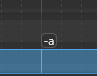
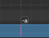
%V2L% and %V2R%
v
?
Long vowel, normaly use when the previous note is manual (red) or to put after a CV if is true
(cyan)
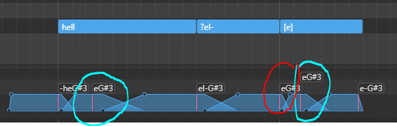
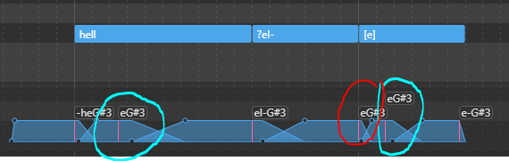
%V2L% and %V2R%
Use?
v v
?
Transition from a vowel to other

%V1L%, %V1R%, %V2L% and %V2R%
v-
?
Transition from a vowel ro silence
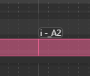
%V2L% and %V2R%
-cv
?
Start CV
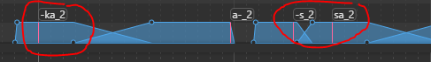
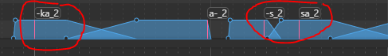
%C2L%, %C2R%, %V2L% and %V2R%
v c
?
Transition between V/CV and CV

%C2L%, %C2R%, %V1L% and %V1R%
Use?
cv
?
Middle CV
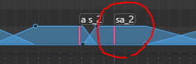
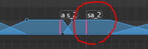
%C2L%, %C2R%, %V2L% and %V2R%
vcv
?
Transition continuas with CV
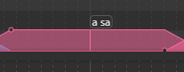
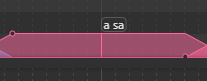
%C2L%, %C2R%, %V1L%, %V1R%, %V2L% and %V2R%
Use?
vc-
?
Transition of a V C to silence
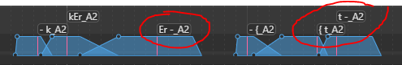
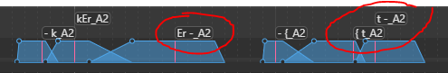
%C2L%, %C2R%, %V2L% and %V2R%
-cc
?
Start of a cluster
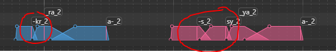
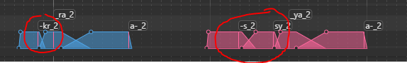
%C2L%, %C2R%, %C1L% and %C1R%
cc
?
Transition between C's
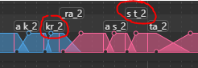
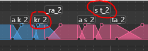
%C2L%, %C2R%, %C1L% and %C1R%
cc F
?
Used when the next CC don't exist
Red CC | Cyan CC F

Red CC | Cyan CC F
%C2L%, %C2R%, %C1L% and %C1R%
cc-
?
End of a cluster
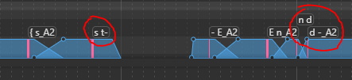
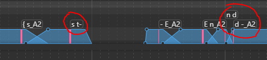
%C2L%, %C2R%, %C1L% and %C1R%
cc exceptions
?
By default will be [V C][CC] but here can be [VC-][CC] or others
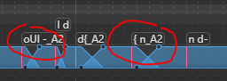
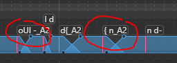
Syntax: [VC-/VC/V-/etc]=[Consonant]/[Consonant]/etc
%C2L%, %C2R%, %C1L% and %C1R%
vcc
?
Like VCV but for CC
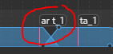
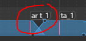
%C2L%, %C2R%, %C1L%, %C1R%, %V1L% and %V1R%
Use?
vc
?
Used when the next CC don't exist (and is true)
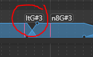
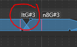
%C1L%, %C1R%, %V1L% and %V1R%
Use?
-c
?
Not used yet
Use?
c-
?
End consonant (only used for ending VCC for now)
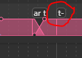
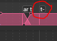
%C2L% and %C2R%
Use?